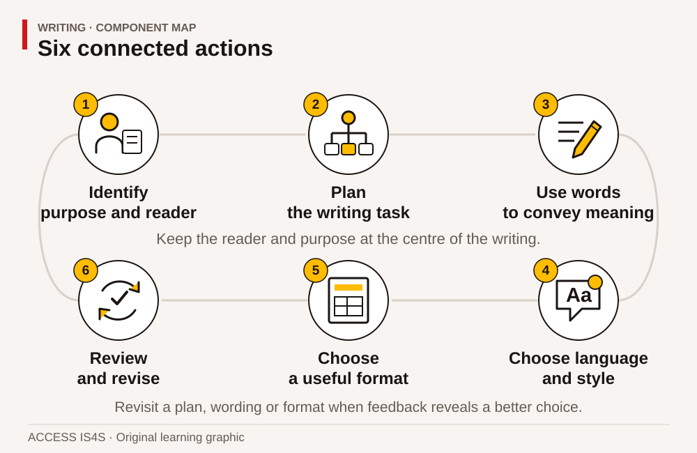
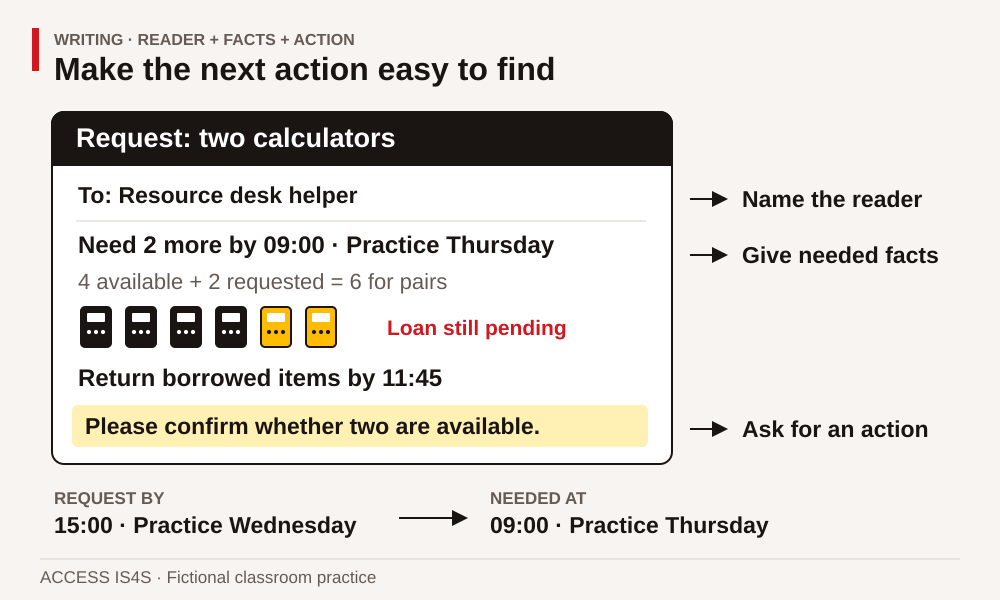
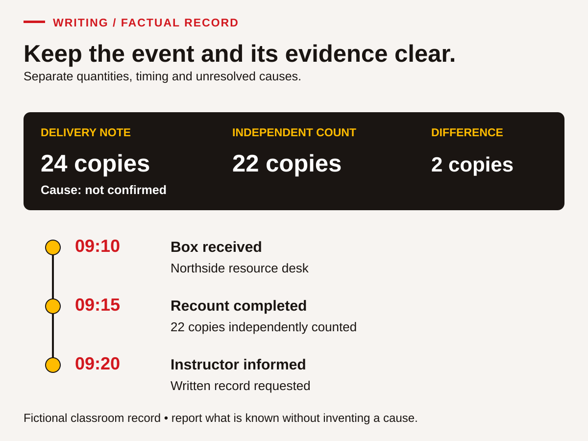

Writing: make a message another person can use
Writing helps a reader understand, decide, remember or act. A useful piece of writing might be a two-line request, a completed form, a clear label, a table or a longer explanation. Its success depends on the task. A short note can be effective when it includes exactly what the reader needs. A longer document can fail when its important point is difficult to find.
You can build writing through practice, feedback and revision. You may already organize information for work, study, appointments or activities you choose to support. This chapter gives those actions a visible process. You can use the supplied fictional cases rather than personal experiences. No activity requires a real message to be sent, a real account to be opened or private information to be shared.
All people, organizations, schedules, quantities and funding arrangements below are invented for learning. The documents resemble useful workplace and classroom formats, but they are original simulations. They do not establish a legal reporting requirement or a workplace procedure. The focus is writing that is accurate for the information you have.
Six parts of writing with a purpose

Read the visual description
An original task illustration occupies the left panel; six numbered actions appear on the right. Keep the reader and purpose at the centre. Six connected components: Identify purpose and reader; Plan the writing task; Use words to convey meaning; Choose language and style; Choose a useful format; Review and revise. Revisit a plan, wording or format when feedback reveals a better choice.
The Skills for Success Writing components are:
- Identify the task that requires you to write. Name the purpose and intended reader.
- Plan the writing task. Gather information, decide what matters and organize it.
- Use written words and phrases so you can achieve the purpose of the writing task. Make the meaning clear enough to use.
- Choose the appropriate language and style for the writing task. Match the reader, relationship and context.
- Choose the appropriate format for the writing task. Use a message, form, list, table or another useful structure.
- Review and revise your writing. Check facts, meaning, tone and presentation, then improve them.
Writing is not always a straight line through these components. You may discover a missing fact while drafting. A reader's question may show that your chosen format hides the answer. Going back to the plan is part of writing, not proof that you failed.
You may handwrite, type, use speech-to-text or work with a scribe. To show your Writing skill, you need to control the words, review the resulting text and decide on revisions. A discussion that produces no learner-authored text does not show this chapter's writing outcome. Record supports so the evidence describes what you actually did.
Make the actor, action and time clear
You can think through a sentence aloud, sign it, type it or use another authoring method. Keep control of its words and review the result. Begin with a clear sentence, then use it in a useful whole message.
Start with one sentence
Write or dictate a sentence for this task: “Tell a helper that four blank sheets are needed before two o'clock.” Ask a reader to identify the item, quantity and time. If all are clear, move to the writing case. Otherwise, choose one feature below to practise first.
Name who does what
Read this example: The helper / checks / the folder code / before recording the loan. Mark actor, action, object and condition. Compare “They do it first.” In that version, the reader must guess both actor and action.
Guided task: expand “They need them tomorrow” using these facts: the classroom coordinator needs five blank record sheets by 09:30 Practice Friday. Choose a complete sentence. Check which words prevent guessing. A valid sentence is “The classroom coordinator needs five blank record sheets by 09:30 Practice Friday.” Other word orders work.
Put a boundary between complete ideas
Consider: “The file is saved the location still needs checking.” Say each idea separately: The file is saved. The location still needs checking. Each has an actor/topic and an action/state. A full stop makes the boundary visible. Another valid choice is “The file is saved, but its location still needs checking.” Notice what but connects: one completed action and one pending check.
Guided repairs:
- “The helper counted eight sheets the note lists ten.”
- “I wrote the heading it still needs a date.”
- “Please check the code before the loan is recorded.”
Check: the first two need boundaries or suitable connecting words; the third is already usable and need not be changed. A long sentence is not automatically wrong. Keep wording that carries the meaning clearly.
Put the reader's action where it can be found
Given “Please confirm. We may need a second box. The count is not complete,” identify what must be confirmed and what remains unknown. The agreed confirmation time is 11:00. Here is a clearer request: Please confirm the completed count by 11:00 before deciding whether another box is needed. Compare the two versions. A clearer sentence must not turn an uncertain need into a confirmed order.
Fresh exit task
Use only these new facts: The practice instructor needs three large-print labels by 14:00 Practice Monday. Two labels are prepared. The remaining label has not been checked. Ask the materials helper to confirm when it will be ready. Write two or three sentences for the helper. Keep prepared, checked and ready distinct; do not claim the whole set is ready. Underline the requested action and mark sentence endings.
Ask a reader to say how many labels are needed and what action they would take. Revise if their reading differs, or explain why the text works. A possible complete response is: “The practice instructor needs three large-print labels by 14:00 Practice Monday. Two are prepared; the remaining label has not been checked. Please confirm when it will be ready.” Your wording can differ while preserving these facts. Record any wording supplied by another person.
Continue to WR-05 for several ambiguities, or WR-07 for a factual record. For the fresh handover checks, remove these models and use different supplied information. Ask for further sentence, spelling or paragraph practice when that would help you communicate your meaning.
Start with the reader and the needed action
Before drafting, answer four questions: Who will read this? What do they need to know? What should they do next? What information do I have the authority and evidence to state? These questions prevent two common problems: writing everything you know, and leaving out the one detail that makes action possible.
A useful request often begins with the request, followed by the context needed to answer it. A factual record often begins with what happened and when. A public notice often begins with the event and essential arrangements. “Formal” does not have to mean complicated. Respectful, direct wording usually helps readers across roles.
Case document A: a resource request with a deadline
Fictional classroom planning record • Introductory learning session
The Northside Learning Room is preparing a classroom session for twelve learners. The session begins at 09:00 on Practice Thursday. The learning tasks include reading a short project brief, checking a small number table and recording a result. Paper workbooks are already available for every learner. Learners may work in pairs for the calculator activity, so the plan calls for six calculators at the start of the session.
The resource cupboard currently contains four working practice calculators. The desk helper can check whether two more can be lent from another classroom. The helper needs the item, quantity, required time and return plan. They cannot promise a loan until the other classroom's booking has been checked. The intended recipient of your message is the resource desk helper, not the learners attending the session.
The session ends at 11:30. The instructor has offered to return the borrowed calculators to the resource desk by 11:45. The helper asks to receive the request by 15:00 on Practice Wednesday so they can check availability. If the extra calculators cannot be supplied, the instructor will adapt the activity. Your role is to request the items and ask for confirmation, not to claim they are already booked.
The planning record also mentions that one staff member prefers tea and that the room's old storage labels were blue. Neither fact affects the calculator request. The names and needs of individual learners are not required. Use the group size only if it helps explain the quantity. This is a practice message; do not send it to a real service.
WR-01 • Define the writing task
Write a planning note that names the reader, purpose, requested action and information you must avoid presenting as confirmed. Give the note a useful title. Include one sentence explaining why the learners' personal details are unnecessary for this task.
WR-02 • Select the information
Make a two-column planning table: Include and Leave out. Sort at least eight details from case A. For two choices, explain how the detail helps or distracts from the reader's decision. Check that your Include column contains the exact extra quantity, required time, return plan and request deadline.
WR-03 • Organize before drafting
Plan a four-part request: subject line, request, supporting context and confirmation question. Write short notes under each part. Arrange the information so the helper can answer without searching the whole paragraph. If a fact is missing, mark the question you would ask rather than inventing an answer.
Worked example 1: turn the plan into a useful request

Read the visual description
An annotated request asks the resource helper for two calculators by 09:00 on Practice Thursday. Four available plus two requested would make six for pairs. The loan is pending, borrowed items are to return by 11:45, and the request is due by 15:00 on Practice Wednesday. The callouts identify reader, needed facts and requested confirmation.
Subject: Request for two calculators for Practice Thursday
“Hello resource desk team. Could we borrow two calculators for the Northside Learning Room session starting at 09:00 on Practice Thursday? We have four calculators and need six for paired activities. The instructor can return the borrowed items by 11:45. Please confirm whether two are available. This request is being prepared before the 15:00 Practice Wednesday deadline. Thank you.”
The message states the extra quantity rather than the total quantity. It includes when the items are needed and when they will return. “Could we borrow” and “please confirm” show that this is a request, not an established booking. The subject lets the recipient understand the topic before opening the message.
The model is one valid version, not wording to memorize. A shorter message could work if it retained the decision-making details. A more familiar greeting could also be appropriate. The test is whether the intended reader can understand and respond accurately.
WR-04 • Write your request
Using your plan, write a complete practice message of about 70–110 words. Include a subject and an explicit question the helper can answer. Check the quantity against case A. Then underline the words that show availability is not yet confirmed. Keep your own wording rather than copying the worked example sentence by sentence.
Choose words that carry a clear meaning
Readers should not have to guess who “they” are, what “it” refers to or whether “later” means today or next week. Specific nouns and times can solve these problems. “Return the two borrowed calculators by 11:45” is clearer than “Bring them back later.” Repeating a key noun can be useful when several items or people are involved.
Sentence boundaries also carry meaning. Use one sentence for an action and another for its condition when that makes the instruction easier to follow. Put closely related information together. A comma or full stop is not merely a marking rule; it helps the reader separate ideas. Check names, quantities and units with particular care because an otherwise smooth sentence can still communicate the wrong action.
WR-05 • Repair ambiguity
Revise this practice message using case A: “They need them Thursday. Bring it before the class and give them back after. We need six more, I think. It should be fine.” Make the recipient, item, extra quantity, timing and unconfirmed status clear. Then explain two changes you made and the misunderstanding each prevents.
WR-06 • Change the reader
Now write a short classroom notice for the twelve learners. They need to know that the activity can begin with supplied paper workbooks and that they do not need to bring a personal calculator. The borrowing request is still pending. Write 40–70 words that explain what learners should bring or do without promising that six calculators have been secured. Identify one detail from your request that this audience does not need.
Plan a factual record before interpreting it
A record is useful when another person can understand what was observed, what was reported by someone else and what remains unknown. Separate those categories. “The box contained 22 workbooks when counted” is an observation in the case below. “The supplier deliberately removed two” is an accusation that the case does not support.
Use who, what, when and where as prompts, then add the action taken and the unresolved question. Not every form needs all possible details. A classroom materials record should not include personal learner information simply because there is room on the page. A blank field may mean information is missing; use “not provided in the case” where appropriate rather than making up a name or code.
Case document B: the workbook delivery
Fictional materials-desk case • Practice Tuesday
At 09:10, a classroom helper receives a sealed box at the Northside resource desk. The delivery note lists 24 copies of the introductory workbook. The outside label reads “Introductory workbooks, box 1 of 1.” The case gives no order number or supplier contact name. The helper opens the box on the desk and counts 22 workbooks. A second classroom helper independently counts the same 22 copies at 09:15.
The helpers keep the delivery note and put the 22 workbooks together on the resource shelf. At 09:20, they tell the instructor that the note and count differ. The instructor asks for a short written record so the resource coordinator can check the order. The coordinator has not yet contacted the supplier. No explanation for the difference has been confirmed.
The class needs the workbooks for a later session, and existing spare copies may be available. The instructor will decide how to prepare that session after checking the cupboard. The helpers should not promise replacement delivery, describe a refund, change the supplier's paperwork or claim that anyone caused the discrepancy. Their immediate writing task is to preserve a clear account and request the appropriate check.
One draft note on the desk says, “The supplier messed up again and left us short. Someone should fix this right away.” That draft contains an unsupported claim about a repeated problem, gives no quantities and does not identify who should take the next step. You have enough information to produce a more useful record.
WR-07 • Complete the form
Create and complete this practice form using case B: Practice day; location; item; receipt time; quantity on delivery note; quantity counted; count-check time; action already taken; information still missing; requested follow-up. Use short entries where they are sufficient. Do not invent an order number or contact name. Keep the difference between the receipt time and recount time visible.
WR-08 • Replace judgement with evidence
Rewrite the draft note from case B as three or four factual sentences. Include the quantities, the independent recount, the action already taken and the next check. Mark one phrase you removed because it was unsupported. Explain how the revision lets the resource coordinator investigate without accepting an accusation as fact.
Worked example 2: order the record for the reader

Read the visual description
A factual record compares a delivery note of twenty-four copies with an independent count of twenty-two, a difference of two with no confirmed cause. The timeline records receipt at 09:10, recount at 09:15 and informing the instructor at 09:20.
An unordered note reads: “Instructor told. Twenty-two books. It said twenty-four. Counted again at 09:15. Box arrived 09:10.” A useful revision is:
“At 09:10 on Practice Tuesday, a box of introductory workbooks arrived at the Northside resource desk. The delivery note listed 24 copies. Two helpers counted 22 copies, with the independent recount completed at 09:15. The instructor was informed at 09:20. The resource coordinator is asked to check the order and the discrepancy. The cause has not been confirmed.”
The revision organizes events in time order, names the item and distinguishes the listed quantity from the observed count. It does not hide the uncertainty. It also does not add a conclusion about who is responsible. The reader can now see both the evidence and the action requested.
WR-09 • Write a short record for a handover
Write a 100–140-word handover record for the resource coordinator using case B. Include a heading, a factual account and a separate Follow-up needed line. State what happened to the delivered workbooks and delivery note. Review your wording for a claim that goes beyond the evidence. A partner should be able to identify the discrepancy and the next step from your text alone.
Choose a format that supports the task
Different formats do different work. A numbered list is useful when order matters. Bullets suit a set of items without a required sequence. A table helps readers compare the same categories across several items. A paragraph explains a relationship or reason. A form helps collect a consistent set of fields.
You can combine formats, but every extra element should serve the reader. A large title cannot repair an inaccurate table. A colour highlight should not be the only way a reader knows which item matters. Clear labels and words should preserve the meaning in black-and-white print or an accessible text version.
WR-10 • Write an ordinary classroom procedure
Use these complete fictional borrowing rules: a learner chooses an available practice item; tells the desk helper the item code and learning ID; the helper checks the current sheet and agrees a return point; the learner checks the recorded item and return point; the item is returned to the helper at that point. If the item is unavailable, the learner asks about a suitable alternative. Write five numbered steps and a separate sentence for the unavailable-item condition. This is a classroom-resource procedure, not equipment-operation guidance.
WR-11 • Turn notes into a readable table
Convert these supplied notes into a table with a clear title and headings: “C04 basic calculator available; C05 large-display calculator reserved; B12 measurement practice book in use; B16 document-reading practice book available. Statuses are for this classroom exercise only. The helper checks the current sheet before agreeing to a loan.” Include the status limitation and checking instruction below the table. Explain why item codes and status labels need separate columns.
Match style to the reader without losing respect
Style includes tone, vocabulary, sentence length and how directly you state the action. A familiar team message can be brief without becoming vague. A message to someone you have not met can be courteous without using elaborate phrases. Avoid labelling readers as careless or assuming why they have not responded. Describe the information needed and make the next step clear.
Plain language does not mean removing every technical term. Some terms are necessary. Explain them when the audience may not know them, and use the same term consistently. A notice for visitors may say “the organization that owns the route” before using “owner.” An internal record may use the established role title without repeating the explanation.
Case document C: a classroom information display
Fictional Willow Reach project-learning display • Planning brief
The learning group is preparing a classroom display called “From materials to a finished road.” It introduces the pit-or-quarry, plant, haul, place and compact stages and explains that equipment items have different purposes. The display contains no operating instructions and is not a public construction notice. It uses the fictional Willow Reach access project to help visitors ask useful questions about responsibilities and information sources.
In the example, the Town of Willow Reach owns the route and manages the project agreement. Pathway Paving is the contractor engaged to deliver described work. Practice funding is $60,000 from the Town, $40,000 from the fictional Regional Access Fund and $20,000 from the fictional Community Route Fund. The labels and amounts must remain identified as fictional. The brief does not establish any real grant eligibility, permit, schedule or environmental result.
The classroom display visit is on Practice Friday, 13:00–13:40, in Room 2 at the Northside Learning Room. This is an invented session, not an actual invitation. Visitors first check in at reception. They do not need to bring tools or personal devices. Printed explanations are provided. The planning team can prepare enlarged copies if requested by 15:00 on Practice Thursday. Questions and requests are directed to the classroom coordinator in this simulation. Do not invent a phone number or email address.
The group needs two documents: a visitor notice that gives the essential arrangements and an internal planning note identifying who will prepare the materials. The visitor does not need individual learner names or private support information. The internal note should record agreed tasks, not make assumptions about what someone can do based on their background.
WR-12 • Write a visitor notice
Write a notice of 90–130 words using case C. Include a title, purpose, practice day, time, room, first arrival point, what visitors need to bring and how to request enlarged copies. Keep the fictional status visible. Use a structure that helps a reader find the arrangements quickly. Do not add a contact address that was not supplied.
WR-13 • Make the tone useful
Revise this internal draft: “You never follow the plan. Just put the stuff in the room and make it nice. Everyone knows what to do. Don't bother the coordinator.” Use only case C to replace it with a respectful request that identifies a useful task and asks for confirmation where responsibility is not assigned. Explain which details you cannot honestly supply yet. Then write a different opening suitable for the visitor notice rather than the internal team.
Review meaning before polishing sentences
Revision changes the substance: the facts, organization, missing information or suitability for the reader. Proofreading checks the final surface: spelling, punctuation, formatting and small copying errors. Both matter, but polishing an unsupported claim does not make it true. Start with purpose and facts, then work toward presentation.
Read as if you were receiving the message for the first time. Can you locate the action? Are names, dates, times, quantities and units correct? Does “confirmed” actually have evidence? Is the scope clear? Finally, read the text aloud or listen through a tool to notice awkward phrasing. You remain responsible for checking the output of a spelling or writing tool against the source.
Worked example 3: a small edit can change the promise
Draft: “Join our real roadwork tour Friday at 1. Bring your tools. All special copies are ready.”
Case C does not support a real worksite tour, a tools requirement or the claim that requested copies are ready. A substantive revision is: “Visit our fictional project-learning display on Practice Friday, 13:00–13:40, in Room 2. Check in at reception first. Tools are not needed. Ask the classroom coordinator for enlarged copies by 15:00 on Practice Thursday.”
Only after those corrections does proofreading become useful. Check the hyphenation or punctuation if needed, but do not spend the whole review making the wrong event description look polished. The revised wording makes the action possible and keeps promises within the brief.
WR-14 • Check against the source
Review this new draft: “The Willow Reach display runs 13:00–14:00 in Room 3 on Practice Friday. Go straight to the room. Bring a calculator. Enlarged copies can be requested any time. The $120,000 funding comes entirely from the contractor.” Identify every factual conflict with case C, then write a corrected version. Label one correction about time, one about access/instructions and one about project roles or money.
WR-15 • Use reader feedback while keeping authorship
Give your WR-12 notice to a partner. Ask them to underline the time, first arrival point and copy-request deadline, then identify one phrase that could be clearer. Listen to their interpretation. Complete at least two purposeful review actions: make one justified change that improves clarity, and check one important fact against case C. If that fact is already correct, retain it and record the verification rather than inventing an error. Keep the first version, revised version and a short change note. You can explain why you declined a suggestion if it would remove accurate information.
Write independently in a new context
Case document D: reserving a practice room
Fictional group-planning brief
Ten learners need a room for a 45-minute peer-learning meeting starting at 14:00 on Practice Monday. They need ten minutes in the room beforehand to arrange paper resources. Room East holds eight people and is available 13:00–14:00. Room West holds twelve and is available 13:30–15:00. These are classroom planning values, not a real booking system.
The desk coordinator handles requests. A room is not reserved until the coordinator confirms it. The message should identify the group size, desired meeting time, setup period, selected room and requested confirmation. It should not include learners' names or reasons for individual support requests. The coordinator will clarify access arrangements with the group if needed.
The group can return the room to its ordinary classroom layout by the end of its requested booking. If a room cannot meet all conditions, the writer should identify the conflict and request an alternative rather than change a requirement silently. Keep copies of the request and any reply so later changes can be traced.
WR-16 • Independent request and record
Write a complete room request using case D. State the whole period you need, including setup, and ask for confirmation. Then make a one-row planning record with request status, room, date label, group size and requested time. The status must match a request that has not yet received a reply. Check that your message and table agree.
WR-17 • Revise when the requirement changes
After drafting WR-16, read this fictional change: “The group now needs to start at 13:30. All other needs stay the same. No new room availability has been supplied.” Write a follow-up that refers to the previous request, explains the changed need and identifies why the original plan no longer meets all conditions. Ask a precise question instead of claiming an alternative is available. Update the planning record without erasing the history of the first request.
WR-18 • Show what changed in your writing
Choose two pieces you wrote for different audiences or purposes. Add a brief writer's note to each explaining the purpose, chosen format and one important wording decision. Select a before-and-after passage and explain how the revision improved accuracy or usefulness. Finish with a specific next practice goal, such as making confirmation questions clearer or checking times against the source. Use actual text as evidence rather than judging yourself as a “good” or “bad” writer.
A practical check before sharing
Use this final sequence on your own draft: purpose → facts → reader → format → wording → proofread. For a practice message, sharing means giving it to your instructor or partner, not sending it to the fictional organization. For a real message later, check the actual recipient and your authority to share the information.
| Writing component | Main evidence in this chapter |
|---|---|
| Identify the writing task | WR-01, WR-06, WR-12: purpose and audience guide the text. |
| Plan the writing task | WR-02, WR-03, WR-07: selected facts and a useful organization. |
| Use written words and phrases to achieve the purpose | WR-04, WR-05, WR-08, WR-09: usable requests and factual records. |
| Choose appropriate language and style | WR-06, WR-12, WR-13: tone and detail fit the reader. |
| Choose appropriate format | WR-07, WR-10, WR-11, WR-16: forms, steps, tables and messages support the task. |
| Review and revise | WR-14, WR-15, WR-17, WR-18: source checks, feedback and traceable changes. |
Local feedback can be Not observed, Not yet demonstrated, Demonstrated with support or Demonstrated independently. Record transfer to a new situation separately. These are learning descriptions, not official proficiency levels. Preserve your draft and revision so the progress is visible, including the support that helped you make it.
Writing · fresh factual handovers
Use the selected form. Produce text that you control, using handwriting, typing, speech-to-text or a scribe under your direction. The reader needs a useful record and a clear next action. No message will be sent. All roles, quantities and events are fictional. Keep the first draft and review notes; a correct first draft does not need an invented error.
Form A · Display posters
Source brief
At 08:45 on Practice Tuesday, a helper received a flat package at the Riverside learning-room desk. Its delivery note listed 12 introductory display posters. The first count found 9 posters. A second helper independently counted 9 at 08:50. The label says Poster package 1 of 1. No order number or supplier contact is supplied.
At 08:55, the helper informed the instructor. The nine posters and delivery note are together in the labelled Display materials tray. The instructor asks for a factual handover to the resource coordinator, who will check the order and tell the instructor the next step before 12:00 Practice Tuesday. The coordinator has not contacted the supplier. No cause, replacement, refund or delivery promise is confirmed.
The posters are for a later classroom display. The instructor will decide whether existing display materials can be used. The helper does not decide that arrangement. A personal phone number written on the outer packaging is not relevant to the handover and must not be copied. The desk's blue pen and a visitor's comment that “deliveries are always wrong” are not evidence about this order.
CK-WR-A01 · Plan for the reader
Make a brief plan naming the reader, purpose, necessary facts and requested next action. Identify two details you will leave out and why. Distinguish completed actions from the decision still pending.
CK-WR-A02 · Write the handover
Write about 80–130 words, with a useful heading and a separate Follow-up needed line. Include the quantities, independent check, sequence, location of the materials and record, unresolved cause and coordinator's next step/deadline. Use your own wording. Do not add a contact address or promise a solution.
CK-WR-A03 · Review meaning
Give the draft to a reader. Ask them to identify the discrepancy, what is already done, where the materials are and who must do what next. Check their interpretation against the brief. Revise a misleading or unclear detail, or record why the tested wording already works. Also check one sentence boundary and one pronoun/reference. Keep the reader's actual response and your decision.
Form B · Orientation cards
Source brief
At 14:05 on Practice Thursday, a helper received a box at the Harbour learning-room desk. The packing record listed 30 orientation cards, but the first count found 26. Another helper independently counted 26 at 14:10. The label says Orientation cards, box 1 of 1. No order number or supplier contact is supplied.
At 14:15, the instructor was informed. The 26 cards and packing record are together in the labelled Orientation materials tray. The materials coordinator needs a factual handover so they can check the order and tell the instructor the next step before 16:00 Practice Thursday. The coordinator has not contacted the supplier. No explanation, replacement, refund or delivery promise is confirmed.
The cards are for a later classroom session. The instructor will decide whether to adapt that session after checking other resources. The helper cannot announce that decision. A personal address written on the box is unnecessary for the handover and must not be copied. The colour of the box and a colleague's remark that “someone must have taken them” do not establish the cause of the discrepancy.
CK-WR-B01 · Plan for the reader
Make a brief plan naming the reader, purpose, necessary facts and requested next action. Identify two details you will leave out and why. Distinguish completed actions from the decision still pending.
CK-WR-B02 · Write the handover
Write about 80–130 words, with a useful heading and a separate Follow-up needed line. Include the quantities, independent check, sequence, location of the materials and record, unresolved cause and coordinator's next step/deadline. Use your own wording. Do not add a contact address or promise a solution.
CK-WR-B03 · Review meaning
Give the draft to a reader. Ask them to identify the discrepancy, what is already done, where the materials are and who must do what next. Check their interpretation against the brief. Revise a misleading or unclear detail, or record why the tested wording already works. Also check one sentence boundary and one pronoun/reference. Keep the reader's actual response and your decision.